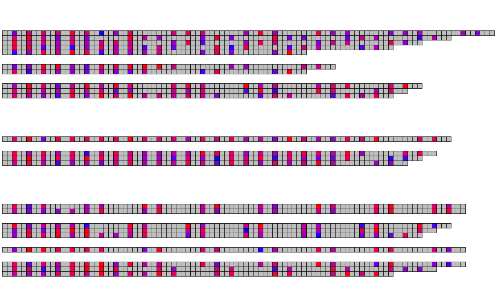
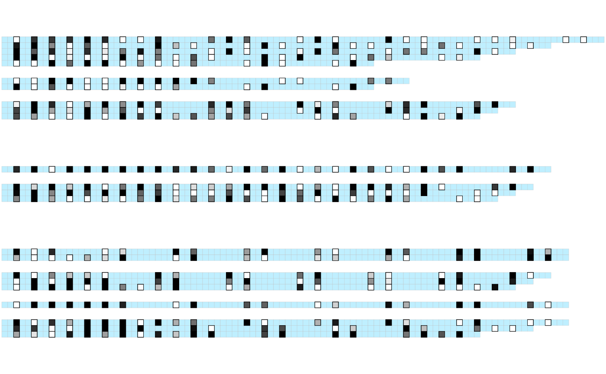

Visualise methylation probabilities for many DNA sequences
Source:R/visualise_methylation.R
visualise_methylation.RdThis function takes vectors of modifications locations, modification probabilities,
and sequence lengths (e.g. created by extract_methylation_from_dataframe()) and
visualises the probability of methylation (or other modification) across each read.
Assumes that the three main input vectors are of equal length n and represent n sequences
(e.g. Nanopore reads), where locations are the indices along each read at which modification
was assessed, probabilities are the probability of modification at each assessed site, and
lengths are the lengths of each sequence.
For each sequence, renders non-assessed (e.g. non-CpG) bases as other_bases_colour, renders
background (including after the end of the sequence) as background_colour, and renders assessed
bases on a linear scale from low_colour to high_colour.
Clamping means that the endpoints of the colour gradient can be set some distance into the probability
space e.g. with Nanopore > SAM probability values from 0-255, the default is to render 0 as fully blue
(#0000FF), 255 as fully red (#FF0000), and values in between linearly interpolated. However, clamping with
low_clamp = 100 and high_clamp = 200 would set all probabilities up to 100 as fully blue,
all probabilities 200 and above as fully red, and linearly interpolate only over the 100-200 range.
A separate scalebar plot showing the colours corresponding to each probability, with any/no clamping values,
can be produced via visualise_methylation_colour_scale().
Usage
visualise_methylation(
modification_locations,
modification_probabilities,
sequence_lengths,
low_colour = "blue",
high_colour = "red",
low_clamp = 0,
high_clamp = 255,
background_colour = "white",
other_bases_colour = "grey",
outline_colour = "black",
outline_linewidth = 3,
outline_join = "mitre",
modified_bases_outline_colour = NA,
modified_bases_outline_linewidth = NA,
modified_bases_outline_join = NA,
other_bases_outline_colour = NA,
other_bases_outline_linewidth = NA,
other_bases_outline_join = NA,
margin = 0.5,
return = TRUE,
filename = NA,
render_device = ragg::agg_png,
pixels_per_base = 20
)Arguments
- modification_locations
character vector. One character value for each sequence, storing a condensed string (e.g."3,6,9,12", produced viavector_to_string()) of the indices along the read at which modification was assessed. Indexing starts at 1.- modification_probabilities
character vector. One character value for each sequence, storing a condensed string (e.g."0,128,255,15", produced viavector_to_string()) of the probability of methylation/modification at each assessed base.
Assumed to be Nanopore > SAM style modification stored as an 8-bit integer from 0 to 255, but changing other arguments could make this work on other scales.- sequence_lengths
numeric vector. The length of each sequence.- low_colour
character. The colour that should be used to represent minimum probability of methylation/modification (defaults to blue).- high_colour
character. The colour that should be used to represent maximum probability of methylation/modification (defaults to red).- low_clamp
numeric. The minimum probability below which all values are colouredlow_colour. Defaults to0(i.e. no clamping). To specify a proportion probability in 8-bit form, multiply by 255 e.g. to low-clamp at 30% probability, set this to0.3*255.- high_clamp
numeric. The maximum probability above which all values are colouredhigh_colour. Defaults to255(i.e. no clamping, assuming Nanopore > SAM style modification calling where probabilities are 8-bit integers from 0 to 255).- background_colour
character. The colour the background should be drawn (defaults to white).- other_bases_colour
character. The colour non-assessed (e.g. non-CpG) bases should be drawn (defaults to grey).- outline_colour
character. The colour of the box outlines. Defaults to black.- outline_linewidth
numeric. The linewidth of the box outlines. Defaults to3. Set to0to disable box outlines.- outline_join
character. One of"mitre","round", or"bevel"specifying how outlines should be joined at the corners of boxes. Defaults to"mitre". It would be unusual to need to change this.- modified_bases_outline_colour
character. IfNA(default), inherits fromoutline_colour. If notNA, overridesoutline_colourfor modification-assessed bases only.- modified_bases_outline_linewidth
numeric. IfNA(default), inherits fromoutline_linewidth. If notNA, overridesoutline_linewidthfor modification-assessed bases only.- modified_bases_outline_join
character. IfNA(default), inherits fromoutline_join. If notNA, overridesoutline_joinfor modification-assessed bases only.- other_bases_outline_colour
character. IfNA(default), inherits fromoutline_colour. If notNA, overridesoutline_colourfor non-modification-assessed bases only.- other_bases_outline_linewidth
numeric. IfNA(default), inherits fromoutline_linewidth. If notNA, overridesoutline_linewidthfor non-modification-assessed bases only.- other_bases_outline_join
character. IfNA(default), inherits fromoutline_join. If notNA, overridesoutline_joinfor non-modification-assessed bases only.- margin
numeric. The size of the margin relative to the size of each base square. Defaults to0.5(half the side length of each base square).- return
logical. Boolean specifying whether this function should return the ggplot object, otherwise it will returninvisible(NULL). Defaults toTRUE.- filename
character. Filename to which output should be saved. If set toNA(default), no file will be saved. Recommended to end with".png", but can change if render device is changed.- render_device
function/character. Device to use when rendering. Seeggplot2::ggsave()documentation for options. Defaults toragg::agg_png. Can be set toNULLto infer from file extension, but results may vary between systems.- pixels_per_base
integer. How large each box should be in pixels, if file output is turned on via settingfilename. Corresponds to dpi of the exported image. Defaults to20. Low values acceptable as currently this function does not write any text.
Value
A ggplot object containing the full visualisation, or invisible(NULL) if return = FALSE. It is often more useful to use filename = "myfilename.png", because then the visualisation is exported at the correct aspect ratio.
Examples
# \donttest{
## Extract info from dataframe
methylation_info <- extract_methylation_from_dataframe(example_many_sequences)
## Visualise example_many_sequences with all defaults
## This looks ugly because it isn't at the right scale/aspect ratio
visualise_methylation(
methylation_info$locations,
methylation_info$probabilities,
methylation_info$lengths
)
## Export with all defaults rather than returning
visualise_methylation(
methylation_info$locations,
methylation_info$probabilities,
methylation_info$lengths,
filename = "example_vm_01.png",
return = FALSE
)
## View exported image
image <- png::readPNG("example_vm_01.png")
unlink("example_vm_01.png")
grid::grid.newpage()
grid::grid.raster(image)

## Export with customisation
visualise_methylation(
methylation_info$locations,
methylation_info$probabilities,
methylation_info$lengths,
filename = "example_vm_02.png",
return = FALSE,
low_colour = "white",
high_colour = "black",
low_clamp = 0.3*255,
high_clamp = 0.7*255,
other_bases_colour = "lightblue1",
other_bases_outline_linewidth = 1,
other_bases_outline_colour = "grey",
modified_bases_outline_linewidth = 3,
modified_bases_outline_colour = "black",
margin = 0.3
)
## View exported image
image <- png::readPNG("example_vm_02.png")
unlink("example_vm_02.png")
grid::grid.newpage()
grid::grid.raster(image)

# }